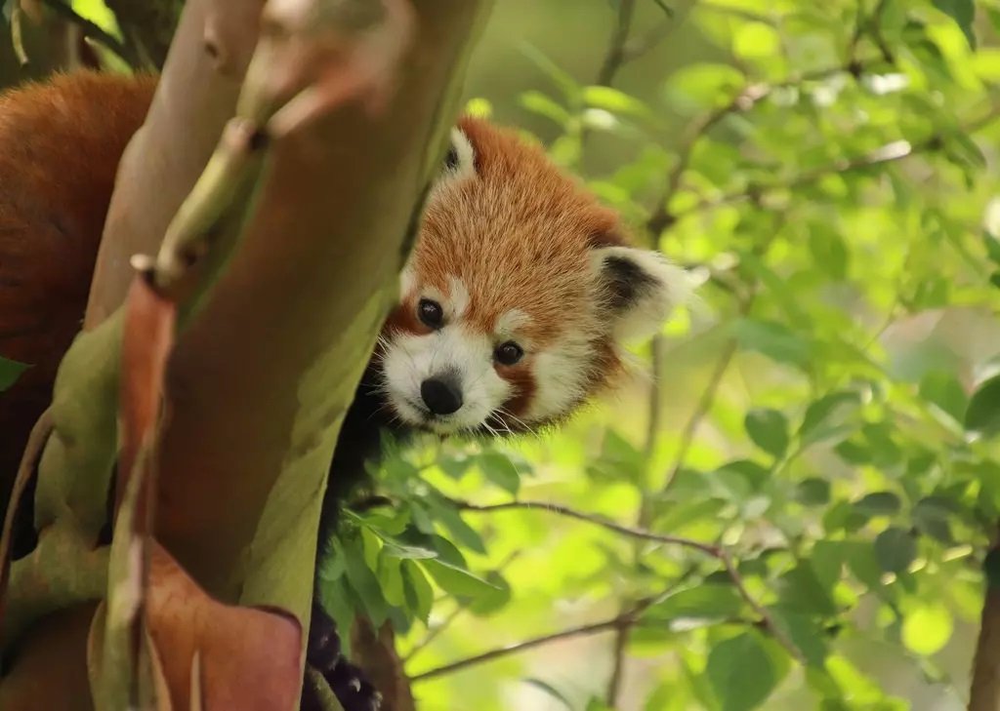
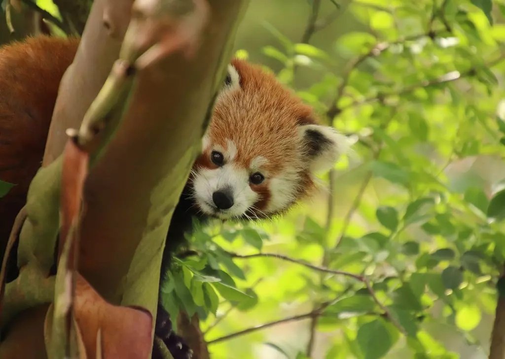

Red pandas are animals that are larger than domesticated cats. They have really thick fur, the belly and limbs are black and they have white markings on the side of their head. They are herbivores which means they only eat plants. They are skillful and very nimble and acrobatic animals.They live in forests. When red panda’s feel threatened they will go on their back legs and raise their hands up to seem much bigger than the animal threatening them. There has been DNA research that they belong in their own unique family tree, they previously belonged to the raccoon family and before that it used to be pandas. They are currently at risk of going into extinction with a population less than 10,000.
Red panda images
 
